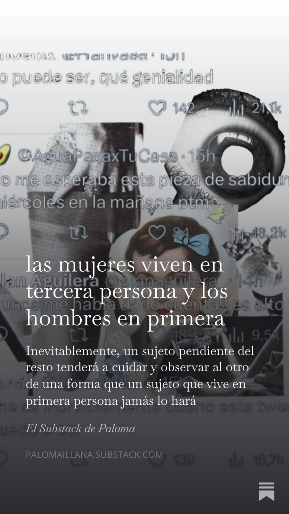

Intereses y hobbies
- Canal de YouTube – Profe Alex - Contenido educativo muy útil para ingeniería.
- Canal de YouTube – El Traductor de Ingeniería – Explica conceptos de ingeniería de forma sencilla.
- NotebookLM (Google) – Herramienta de IA que uso para estudiar y practicar con documentos.
- SciELO – Revista Científica – Biblioteca de artículos y papers de investigación en ingeniería industrial y otras áreas.
Leer
Uno de mis pasatiempos favoritos suelo leer artículos en la aplicación de Substack y en la sección noticias de Google, recientemente leí un artículo acerca de diferencia de géneros.
Pintura
Me gusta mucho leer análisis de diversas obras de arte, mi favorita es "El beso" de Gustav Klimt.

Recursos y enlaces útiles
Canales y sitios que recomiendo para aprender y practicar: